Available on Steam
View on Steam →
Unchained: Tale of Enra is a tactical RPG that reimagines traditional turn-based combat by introducing a unique Negotiation system. Players can choose to defeat enemies through conventional tactical combat or convince them to lay down their arms by breaking their Resolve — a non-violent approach that offers different rewards and shapes the narrative.
Originally a USC Games Capstone project, Unchained won awards at the 2025 USC Games Expo and continues development beyond the program.
The core goal was to give players genuine tactical agency beyond raw combat power. Each encounter should feel like a puzzle with multiple valid solutions — rewarding players who learn enemy behavior and Resolve thresholds just as much as those who master combat positioning. Enemy AI needed to be readable and consistent so players could form and test strategies without feeling cheated.
Early Development
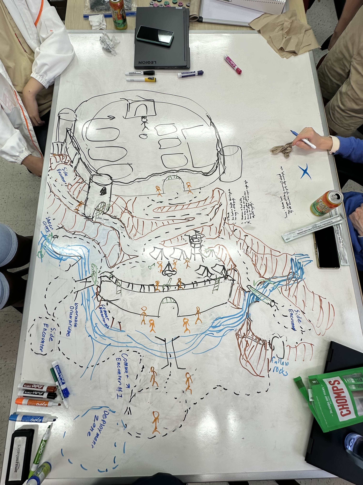
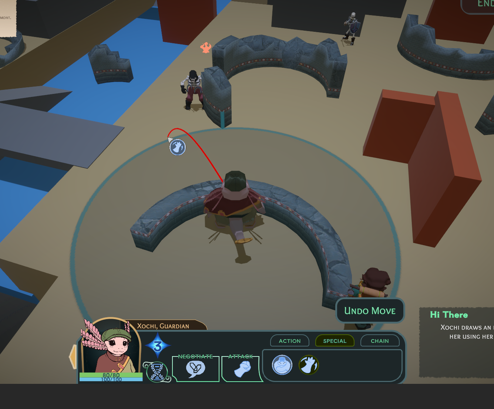
By the time we had a working prototype we had workshopped over 15 different combat systems. Many did not make it into the final game, but key systems — Negotiation, character abilities, Chain abilities, turn order, basic enemy behavior, Line of Sight, and Resolve — all needed to be in place before we could begin testing the core loop with playtesters.
Negotiation System
Instead of attacking, players spend their action economy on a turn by Negotiating — selecting pre-made responses to reduce an enemy's Resolve. The Resolve meter is visible on all enemies and affects their behavior: enemies may become debuffed, act more passively, flee, or even join the player's side.
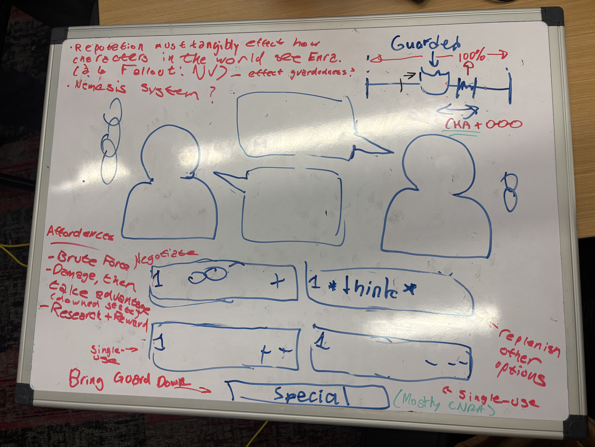
Throughout development I iterated on the system through many prototype versions and UI variants. Extensive early playtesting was essential to refining the pacing and feedback loops.
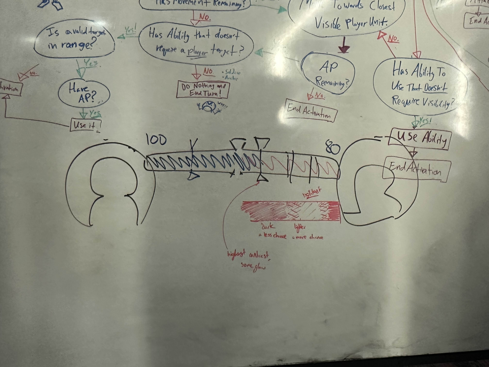
Enemy AI Design
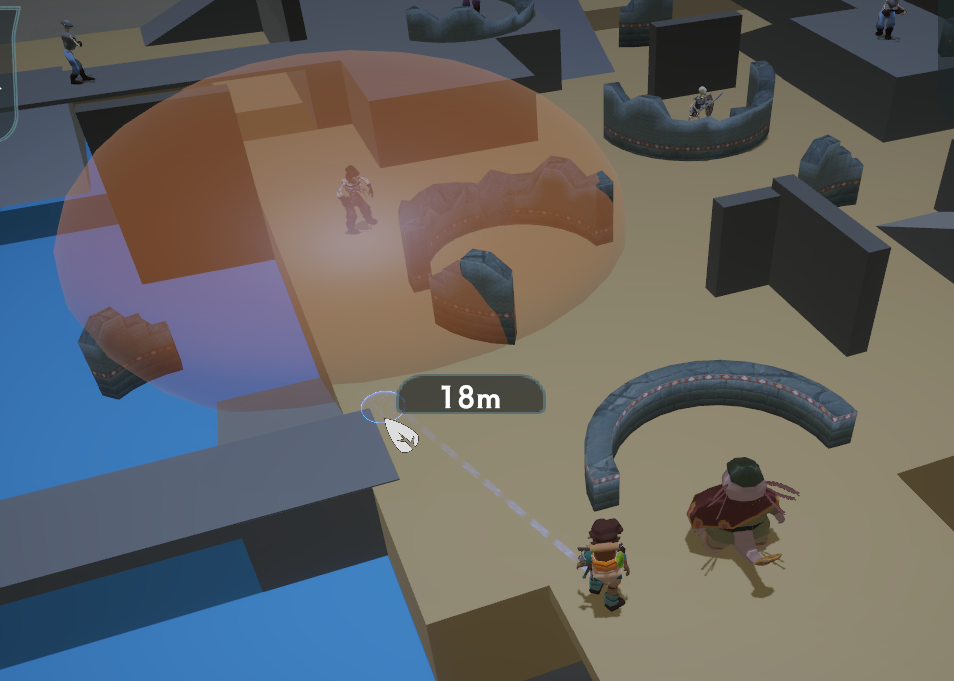
View Featured Design Documents
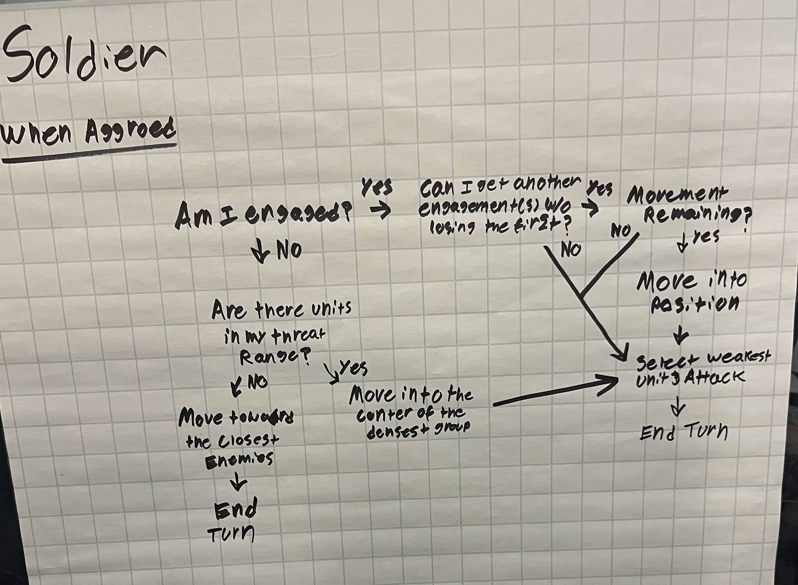
The Soldier — first enemy type created, melee unit that attacks the nearest player while also positioning toward weaker targets. Served as the template for all subsequent units.
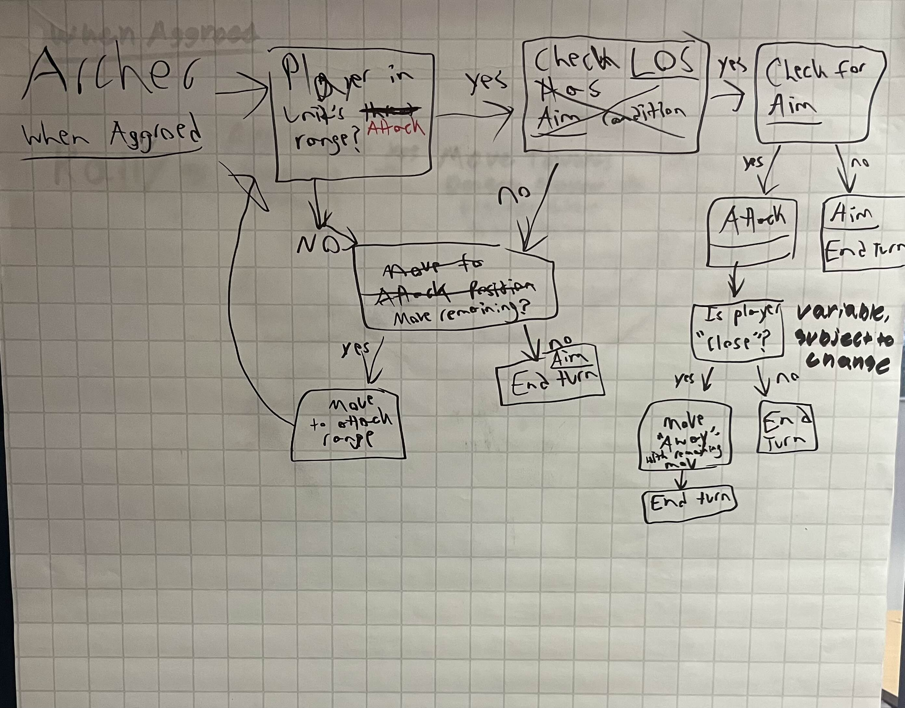
The Archer — basic ranged enemy that spends a turn aiming before firing. Teaches players to count turns and interrupt or reposition.
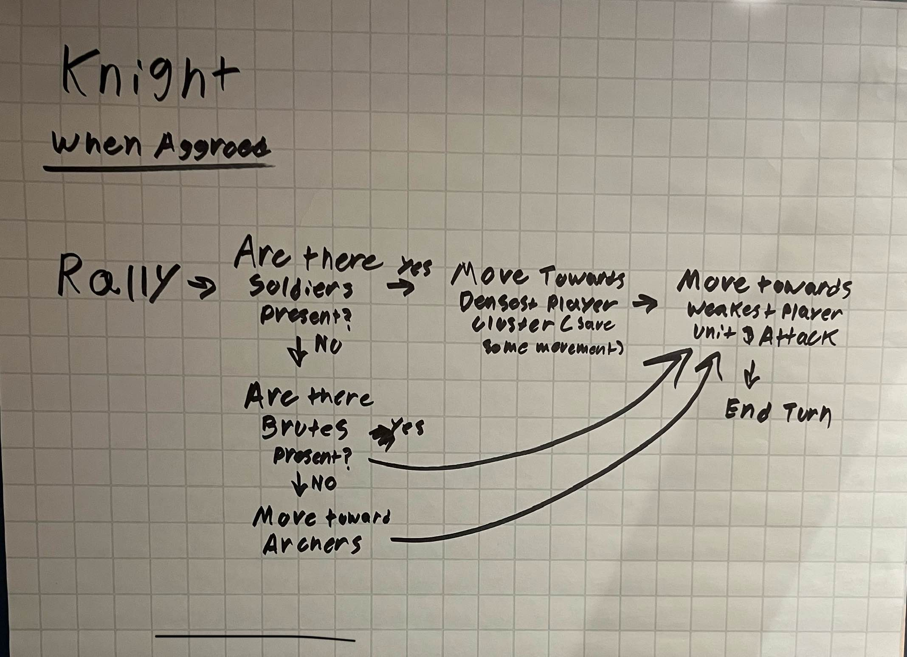
The Knight — bulky melee unit that buffs allies before engaging. Players who learn this pattern know to use their tank to taunt the Knight during the buff turn.
Playtesting & User Research
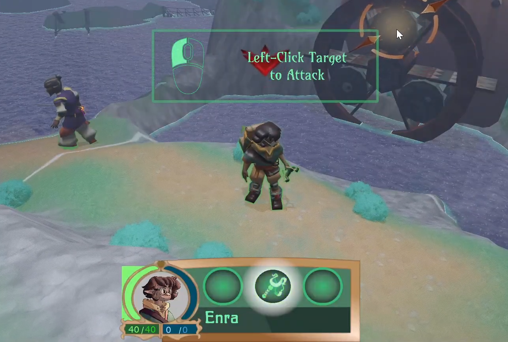
Over the course of development I conducted 100+ playtests covering individual systems, levels, UI, and overall fun factor. I collected data in a playtest log and presented findings each sprint — surfacing bugs, systemic flaws, and specific iteration opportunities.
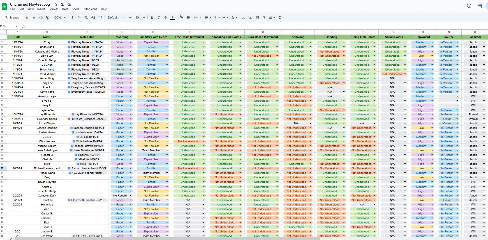
As development matured, I used accumulated playtest knowledge to design and implement the game's tutorial sequence, ensuring new players were eased into all systems before their first real encounter.
View Featured Design DocumentsLevel & Conflict Design
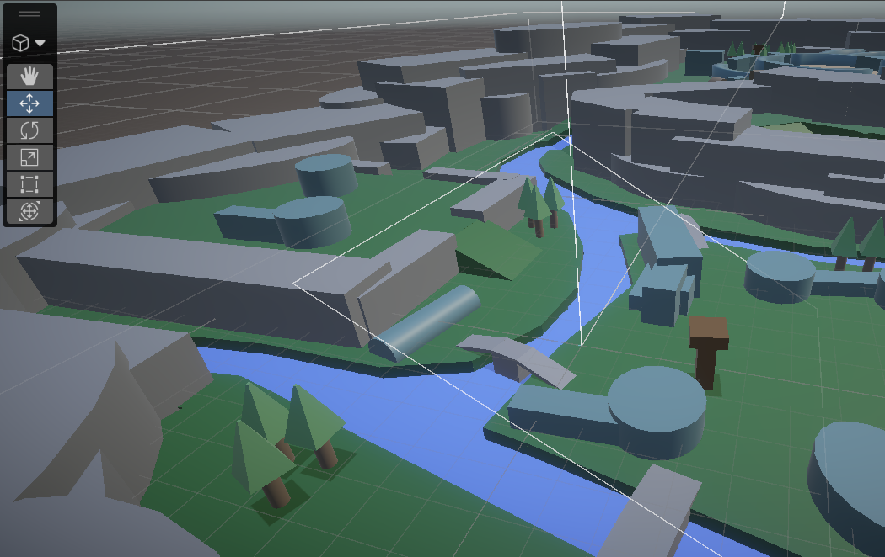
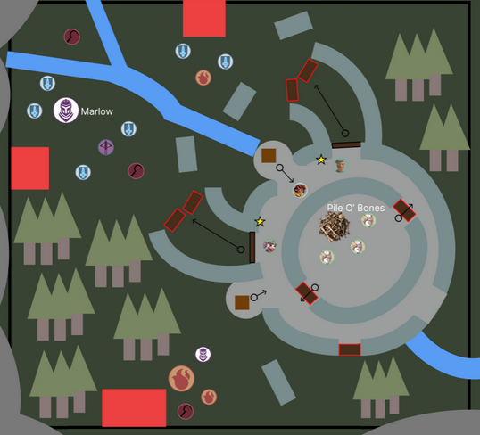
Defense maps can become static without evolving objectives. I addressed this by adding a mid-map twist: enemies blow open a wall at the south, creating a third entry point just as players think they have the north covered. This forces real-time adaptation with limited tanking resources.
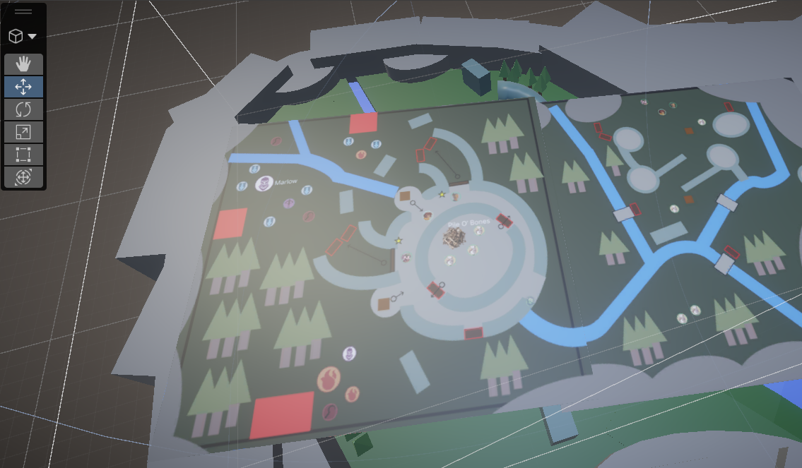
My greyboxing process: rough boundary blockout first, then blockmesh pass adding architectural detail.
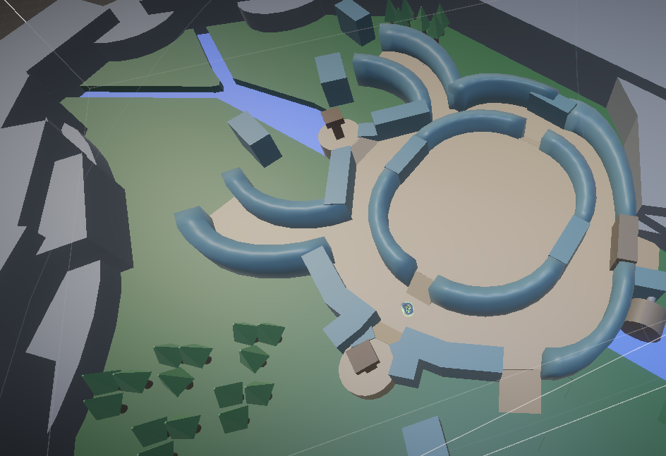
{kind=link}
{kind=link}
{kind=link}
{kind=link}
{kind=link}
{kind=link}
{kind=link}
{kind=link}